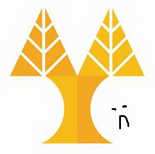

University of Cyprus
Dept. of Computer Science
Welcome to the EPL342 project test page
$sqlDBname, "Uid" => $sqlUser, "PWD" => $sqlPass); ?> Give credentials for Observers system
Sign in Observers system
Username:
Password:
'); } ?>